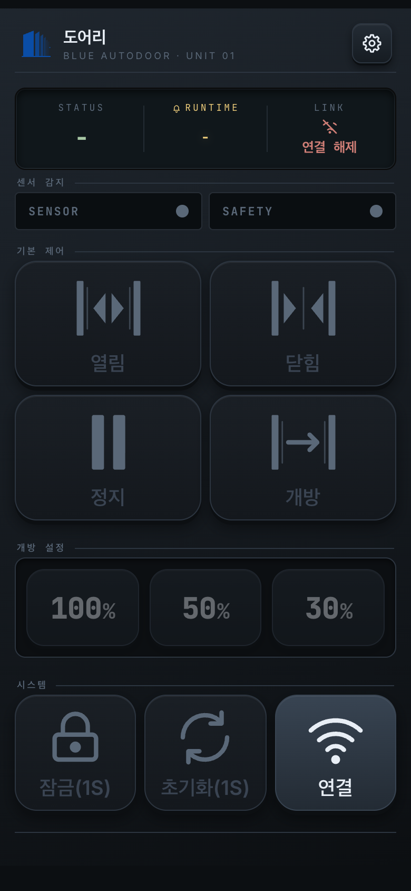
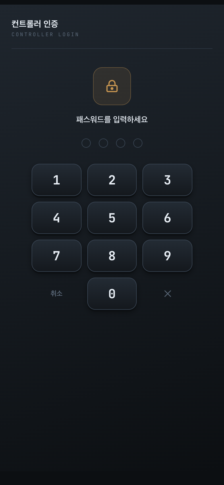
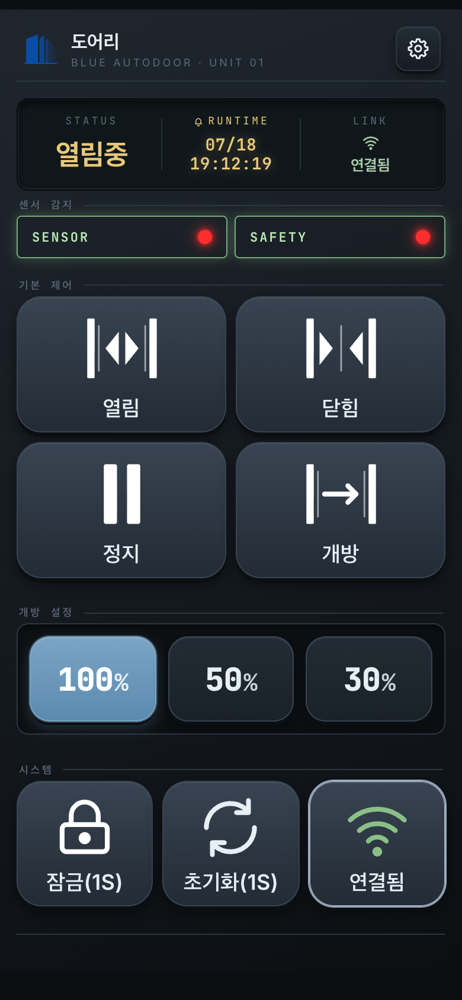

DOORI — Support & User Guide
Mobile app that controls and monitors an automatic door (MCU) over local Wi-Fi (Android · iPhone)
📮 Contact
If you need help or run into a problem, email us:
apracsix@gmail.com
Privacy policy: yongkyoku.github.io/doori-privacy
Privacy policy: yongkyoku.github.io/doori-privacy
Overview
DOORI connects your phone directly to an automatic-door controller (MCU) so you can open, close, and monitor the door.
- Connection — direct TCP connection to the controller's IP address (default port 50001) on the same Wi-Fi network.
- Local only — the app works only while your phone is on the door's Wi-Fi (AP). Cellular data and remote access are not supported.
- Languages — Korean · English · Chinese · Japanese. Themes: dark / light / white.
Important — door control, door settings, and password changes all require an
active connection. The password and door parameters are stored on the controller (MCU), not in the app.
Getting started


- Join the door's Wi-Fi network with your phone (its name looks like
WizFi360_…— check your phone's Wi-Fi list). - Launch DOORI. The app opens on the home screen in offline mode (it does not auto-connect).
- Tap the Connect button at the bottom right of the home screen.
- When the password screen appears, enter the controller password (factory default
1234). After that, all controls are enabled.
iPhone users — Local Network permission: on iOS 14+, the first connection
shows a popup asking to allow DOORI to find and connect to devices on your local network. You must
tap Allow. If you declined it by mistake, enable it in
Settings ▸ DOORI ▸ Local Network, then connect again.
You can also let the app join the door's Wi-Fi for you: turn on
Auto Wi-Fi join in Settings ▸ Network and enter the door's exact Wi-Fi name
(Android 10+ · iPhone). While connected to the door's Wi-Fi — which has no internet — your other
apps fall back to cellular data; your phone returns to its previous Wi-Fi when you disconnect or
close the app.
Home screen at a glance

- Status panel — STATUS (door state) · RUNTIME (time of the last action) · LINK (connection). The thin divider bars flash briefly each time a command is actually sent — that flash is your confirmation cue.
- SENSOR / SAFETY — the passage sensor (triggers opening) and the safety sensor (prevents closing on someone) blink red while detecting.
- Open / Close / Stop / Hold — main controls; enabled while connected and unlocked.
- Aperture presets (100 / 50 / 30%) — choose how far the door opens; the door moves on the next Open command.
- Lock / Reset — hold for 1 second (shown as
Lock(1S)) to prevent accidental taps. Connect toggles the connection.
Troubleshooting
| Symptom | What to check |
|---|---|
| Cannot connect | Make sure your phone is on the same Wi-Fi as the controller. Check the IP/port in Settings ▸ Network (advanced — long-press the Network row for 5 s; default port 50001). |
| Cannot connect on iPhone only | The iOS Local Network permission is off. Enable it in Settings ▸ DOORI ▸ Local Network. |
| Frequent disconnects | Check the Wi-Fi signal. If the controller responds slowly, raise the MCU response timeout (advanced network settings, default 1000 ms → 3000–5000 ms). |
| Control buttons are gray | The app is not connected, or the door is locked. |
| No internet while using DOORI | Normal — the door's Wi-Fi has no internet. Your phone usually falls back to cellular data, and returns to your previous Wi-Fi when you disconnect. |
| A "DEMO" badge is shown and the real door does not move | Demo Mode is on (a virtual controller for demonstrations). Turn it off by long-pressing Settings ▸ Info for 5+ seconds. |
| Forgot the password | The password is stored on the controller (MCU). Contact your installer, or reset the controller. |
FAQ
- Q. Can several phones control the door at the same time?
- Yes — each phone connects and authenticates on its own. If two phones send commands at the same moment the command already in progress takes priority, so we recommend operating the door from one phone at a time.
- Q. Can I open my door from outside (over the internet)?
- No. DOORI works only on the door's local Wi-Fi. Remote access is intentionally not supported for security reasons.
- Q. Does the app collect any personal data?
- No. There is no account, login, or sign-up, and the app talks to no external servers. See the privacy policy.